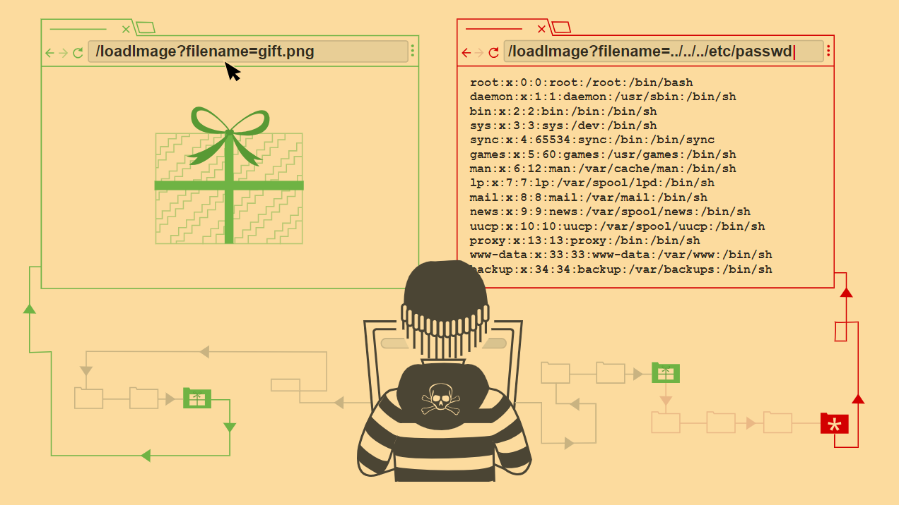

Path traversal
In this section, we explain:
What path traversal is.
How to carry out path traversal attacks and circumvent common obstacles.
How to prevent path traversal vulnerabilities.

Labs
If you’re familiar with the basic concepts behind path traversal and want to practice exploiting them on some realistic, deliberately vulnerable targets, you can access labs in this topic from the link below.
What is path traversal?
Path traversal is also known as directory traversal. These vulnerabilities enable an attacker to read arbitrary files on the server that is running an application. This might include:
Application code and data.
Credentials for back-end systems.
Sensitive operating system files.
In some cases, an attacker might be able to write to arbitrary files on the server, allowing them to modify application data or behavior, and ultimately take full control of the server. 官方给出了视频：
<iframe src="https://www.youtube.com/embed/NQwUDLMOrHo?origin=https://portswigger.net&rel=0" allowfullscreen="" data-pp-element-found="" style="box-sizing: border-box; position: absolute; top: 0px; left: 0px; width: 710.29px; height: 399.53px; border: 0px;"></iframe>
Reading arbitrary files via path traversal
Imagine a shopping application that displays images of items for sale. This might load an image using the following HTML:
<img src="/loadImage?filename=218.png">
The loadImage URL takes a filename parameter and returns the contents of the specified file. The image files are stored on disk in the location /var/www/images/. To return an image, the application appends the requested filename to this base directory and uses a filesystem API to read the contents of the file. In other words, the application reads from the following file path:
/var/www/images/218.png
This application implements no defenses against path traversal attacks. As a result, an attacker can request the following URL to retrieve the /etc/passwd file from the server’s filesystem:
https://insecure-website.com/loadImage?filename=../../../etc/passwd
This causes the application to read from the following file path:
/var/www/images/../../../etc/passwd
The sequence ../ is valid within a file path, and means to step up one level in the directory structure. The three consecutive ../ sequences step up from /var/www/images/ to the filesystem root, and so the file that is actually read is:
/etc/passwd
On Unix-based operating systems, this is a standard file containing details of the users that are registered on the server, but an attacker could retrieve other arbitrary files using the same technique.
On Windows, both ../ and ..\ are valid directory traversal sequences. The following is an example of an equivalent attack against a Windows-based server:
https://insecure-website.com/loadImage?filename=..\..\..\windows\win.ini
LAB
File path traversal, simple case
Solved
Common obstacles to exploiting path traversal vulnerabilities
Many applications that place user input into file paths implement defenses against path traversal attacks. These can often be bypassed.
If an application strips or blocks directory traversal sequences from the user-supplied filename, it might be possible to bypass the defense using a variety of techniques.
You might be able to use an absolute path from the filesystem root, such as filename=/etc/passwd, to directly reference a file without using any traversal sequences.
LAB
File path traversal, traversal sequences blocked with absolute path bypass
Solved
You might be able to use nested traversal sequences, such as ....// or ....\/. These revert to simple traversal sequences when the inner sequence is stripped.
LAB
File path traversal, traversal sequences stripped non-recursively
Solved
In some contexts, such as in a URL path or the filename parameter of a multipart/form-data request, web servers may strip any directory traversal sequences before passing your input to the application. You can sometimes bypass this kind of sanitization by URL encoding, or even double URL encoding, the ../ characters. This results in %2e%2e%2f and %252e%252e%252f respectively. Various non-standard encodings, such as ..%c0%af or ..%ef%bc%8f, may also work.
For Burp Suite Professional users, Burp Intruder provides the predefined payload list Fuzzing - path traversal. This contains some encoded path traversal sequences that you can try.
LAB
File path traversal, traversal sequences stripped with superfluous URL-decode
Solved
An application may require the user-supplied filename to start with the expected base folder, such as /var/www/images. In this case, it might be possible to include the required base folder followed by suitable traversal sequences. For example:
filename=/var/www/images/../../../etc/passwd
LAB
File path traversal, validation of start of path
Solved
An application may require the user-supplied filename to end with an expected file extension, such as .png. In this case, it might be possible to use a null byte to effectively terminate the file path before the required extension. For example:
filename=../../../etc/passwd%00.png
LAB
File path traversal, validation of file extension with null byte bypass
Solved
How to prevent a path traversal attack
The most effective way to prevent path traversal vulnerabilities is to avoid passing user-supplied input to filesystem APIs altogether. Many application functions that do this can be rewritten to deliver the same behavior in a safer way.
If you can’t avoid passing user-supplied input to filesystem APIs, we recommend using two layers of defense to prevent attacks:
Validate the user input before processing it. Ideally, compare the user input with a whitelist of permitted values. If that isn’t possible, verify that the input contains only permitted content, such as alphanumeric characters only.
After validating the supplied input, append the input to the base directory and use a platform filesystem API to canonicalize（规范化） the path. Verify that the canonicalized path starts with the expected base directory.
Below is an example of some simple Java code to validate the canonical path of a file based on user input:
File file = new File(BASE_DIRECTORY, userInput);
if (file.getCanonicalPath().startsWith(BASE_DIRECTORY)) {
// process file
}